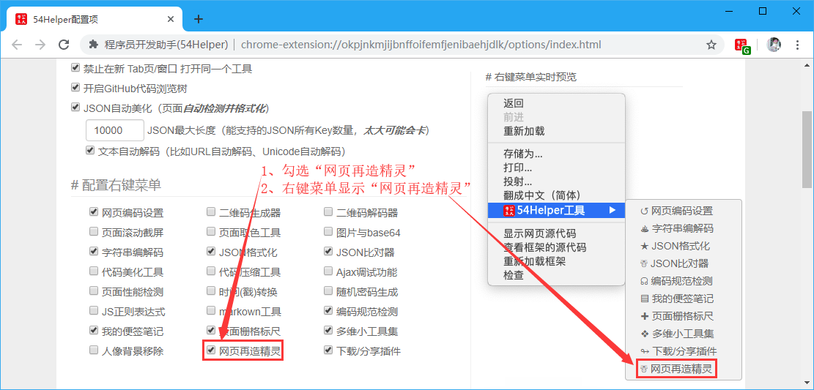
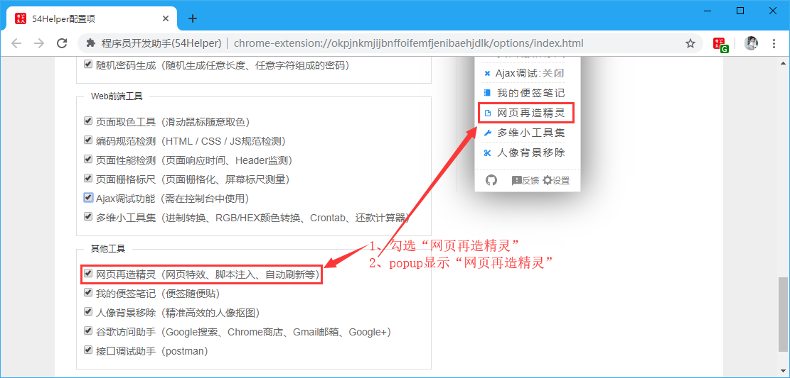
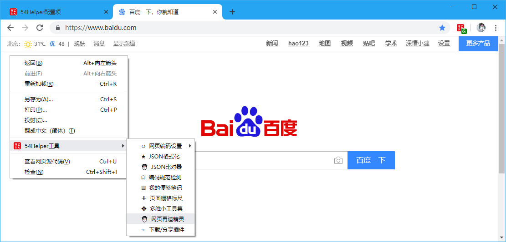

一、简介
精灵可以对匹配的网站地址执行如下动作：
- 网页特效
- 网页定制
- 脚本注入
- 自动刷新等
二、使用配置
2.1 功能开启
在设置界面进行配置，可在 配置右键菜单 和 配置功能菜单 进行配置。
 👆配置右键菜单-网页再造精灵开启
 👆配置功能菜单-网页再造精灵开启
2.2 功能说明
 👆添加精灵 点击左侧 添加精灵 ，然后在右侧填写信息，填写完后，点 保存
示例一：
网页精灵名称：百度搜索结果过滤器
网址匹配规则：https://www.baidu.com/
网页特效设定：（可选）
网页自动刷新：（可选）
精灵注入脚本：（Tips：可以注入任意JS代码，甚至编写一个智能机器人也是可以的，比如网页定制、自动抢票啥的！）
// 以下代码将会红框标识百度推广广告（注：网址匹配规则填写为https://www.baidu.com/）
function adFun() {
document.querySelectorAll("div[cmatchid]").forEach((item) => {
item.parentNode.removeChild(item);
});
document.querySelectorAll(".result").forEach((item) => {
item.querySelectorAll("span").forEach((itemSpan) => {
if (itemSpan.innerHTML.indexOf("广告") != -1) {
item.parentNode.removeChild(item);
}
})
})
setTimeout(adFun, 2000);
};
adFun();
示例二：
网页精灵名称：CSDN广告屏蔽
网址匹配规则：https://blog.csdn.net/
网页特效设定：（可选）
网页自动刷新：（可选）
精灵注入脚本：（Tips：可以注入任意JS代码，甚至编写一个智能机器人也是可以的，比如网页定制、自动抢票啥的！）
document.querySelectorAll("aside,.recommend-right,#dmp_ad_58,#commentBox,.comment-box,.recommend-box,iframe").forEach((item) => {item.parentNode.removeChild(item)});
document.querySelectorAll("main").forEach((item) => {item.style.cssText="margin:0 auto; float: none;"});